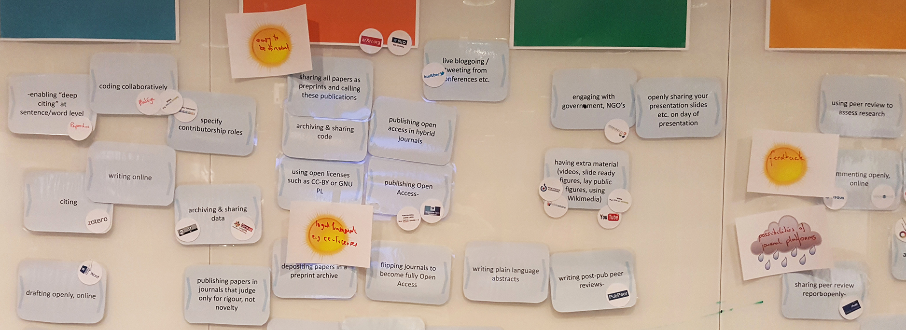
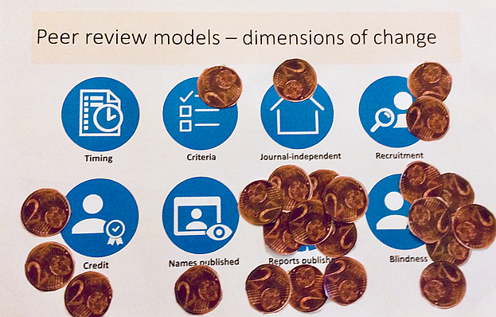
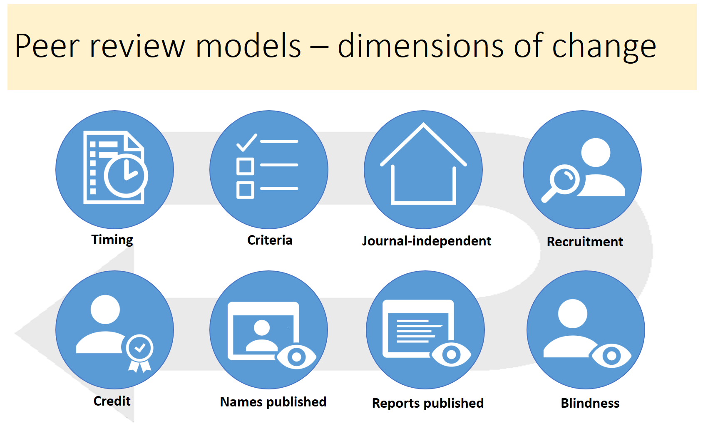

Esempi & guida pratica: adotta, adatta, sviluppa
Questo capitolo raccoglie un fornitissimo repertorio di materiali didattici utili a coinvolgere attivamente i partecipanti ai seminari di formazione e per fare in modo che affrontino in maniera critica i vari aspetti che riguardano la Scienza Aperta.
Nel confrontarvi con questo materiale, è bene che teniate in considerazione il motto: “Adotta, adatta e sviluppa” vale a dire che, laddove sia possibile, è bene utilizzare ciò che già c’è. Prima, quindi, di mettervi a creare delle risorse didattiche ex novo, dovreste verificare che non esistano già delle risorse di cui potete già disporre. Di seguito, troverete alcuni esempi e relativi consigli su come potrebbero essere ri-adattate alle vostre esigenze nonché dei collegamenti a siti internet e strategie su come andare a cercare dell’altro materiale. In alcuni casi, le risorse didattiche già esistenti possono essere utilizzate come sono, senza bisogno di adattamenti. Ad esempio, potreste segnalare il link ad un video tutorial ad accesso aperto sui formati dei file aperti. In altri casi, potreste dover adattare delle risorse già esistenti perché rispondano agli obiettivi formativi che intendete perseguire. Ad esempio, potreste aver bisogno di aggiungere/sostituire dei riferimenti specifici ad istituzioni o nazioni a seconda dei requisiti di Scienza Aperta stabiliti dai finanziatori della ricerca. Solo in ultimissima istanza, dovreste ricorrere alla predisposizione di risorse didattiche ex novo. Se siete intenzionati a creare da voi il vostro materiale didattico, fate in modo di creare delle risorse didattiche aperte per permettere ad altri formatori di riutilizzarle o riadattarle.
Alcuni esempi di gruppi organizzati per la formazione
"Open Science Meet-ups - Göttingen" presso la Biblioteca Universitaria di Göttingen (3 ore)**
Il gruppo “Open Science” di Göttingen, costituito da ricercatori e bibliotecari sostenitori della scienza aperta nonché dello scambio reciproco di conoscenza, organizza regolarmente degli incontri nel corso dei quali si discute sui principali argomenti collegati alla Scienza Aperta. La rete raccoglie tutte le persone che all'interno dell’Università di Göttingen si interessa a vario titolo di Scienza Aperta ed è aperta a tutti gli interessati. Sono diventati degli appuntamenti molto popolari e riescono ad attrarre studiosi di svariate discipline, altamente motivati a condividere le proprie esperienze sull’open scholarship e ad imparare nuovi metodi, strumenti e pratiche. I relatori invitati di solito introducono l’argomento soltanto, mentre in maniera più approfondita viene poi trattato all'interno di gruppi più piccoli.
- Maggiori informazioni, sono disponibili al sito: State and University Library Göttingen - Open Science
Gruppi di studio Mozilla (una serie di incontri di 2–3 ore)
I gruppi di studio sono comunità di pari (ad esempio della stessa istituzione) che si incontrano per imparare/insegnare gli uni dagli/agli altri. Si tratta di incontri divertenti ed informali che permettono ai partecipanti di condividere competenze, esperienze e idee relative alla scienza aperta, codice aperto, programmazione e gruppi di ricerca. L’obiettivo del progetto [gruppo di studio Mozilla] (https://science.mozilla.org/programs/studygroups) mira a favorire questo tipo di studio tra pari fornendo un semplice set di strumenti, modelli e piani di studio nonché l’accesso ad una comunità internazionale di ricercatori che condividono gli stessi interessi e sono appassionati di programmazione (testo adattato da science.mozilla.org/programs/studygroups))
Analisi sulla riproducibilità e la trasparenza nella ricerca (workshop della durata di un giorno)
Trasparenza, condivisione aperta e riproducibilità sono valori fondamentali della scienza ma non sempre fanno parte della pratica quotidiana. La prima edizione di questo workshop ha avuto luogo contestualmente all’evento Open Science Tools, Data & Technologies for Efficient Ecological & Evolutionary Research organizzato da NIOO-KNAW and DANS-KNAW. Il workshop fornisce una panoramica sullo stato dell’arte dell’analisi di riproducibilità per garantire la trasparenza della ricerca. Il workshop copre argomenti metodologici (come ad esempio l’utilizzo delle linee guida per la reportistica e dell’Open Science Framework) e strumenti software (come Git, Docker, RMarkdown / knitr e Jupyter). In aggiunta alla semplice elencazione e presentazione, la seconda metà del workshop si focalizza sulla costruzione di competenze pratiche attraverso esercizi e tutorial che riguardano la maggior parte degli aspetti del software. Materiali e contenuti sono disponibili a questo sito reproducible-analysis-workshop.readthedocs.io
Scienza Aperta: che cosa c’è di interessante per me? (1-2 giorni)
Il workshop mira a fornire a ricercatori e funzionari amministrativi dei concreti modelli di strumenti e processi nell'ambito della Scienza Aperta, trasversali a tutte le diverse discipline perché inizino ad utilizzarli e a discuterne. Per questo, viene fornita una panoramica di pratiche e di strumenti della scienza aperta che vengono utilizzati nel corso del procedimento scientifico con esempi pratici, discussioni partecipate e coinvolgendo la platea. Il secondo giorno è dedicato alla messa in pratica e alla condivisione. A turno, i partecipanti esplorano e, laddove possibile, sperimentano o fanno uso di strumenti e di procedure. In gruppi di poche persone, o individualmente e o anche in sessioni plenarie molto vivaci. Durante la sessione finale, si discute sugli ostacoli e gli incentivi collegati al passaggio alla Scienza Aperta prendendo come caso specifico il loro lavoro di ricerca.
Open Science - what’s in it for me (Vienna, 2017, workshop resoconto)
Open Science - what’s in it for me (Torino, 2018, workshop programma)
I workshop "Carpentry" (2 giorni)
Un workshop carpentry è un evento, ad orientamento pratico, della durata di due giorni sulle competenze fondamentali richieste per la produttività di un gruppo di ricerca ristretto. Brevi tutorial si alternano a esercitazioni pratiche; tutta l’attività didattica passa per un processo di programmazione dal vivo. Il software carpentry venne fondato nel 1998; il data carpentry nel 2013. Entrambi sono incentrati sulle competenze computazionali; sono organizzati in workshop di due giorni con formatori volontari e mirano a colmare le lacune formative nei percorsi di formazione per ricercatori. Ma differiscono per contenuti e per platee. I workshop data carpentry prendono a riferimento le migliori pratiche che hanno a che fare con i dati. Chi partecipa a questi workshop non è interessato ad imparare come si codifica; hanno moltissimi dati e non sanno che cosa farne. I workshop data carpentry sono rivolti a principianti, sono specifici di una disciplina e si basano su un programma completo e un singolo set di dati. I workshop software carpentry sono rivolti a professionisti che devono imparare a programmare nel modo più efficace possibile per poter risolvere i loro specifici problemi computazionali, non sono ristretti ad una disciplina e sono modulari – ogni lezione di software carpentry è un’unità a sé stante.
EIFL Programma di corsi per "Formare-i-formatori" (4 giorni)
L’EIFL ha organizzato un programma di formazione per formatori in cinque università dislocate nei paesi partner di EIFL (Etiopia, Ghana, Zimbawe, Tanzania e Nepal) che si sono impegnate ad introdurre l’accesso aperto, la scienza aperta e i dati grezzi della ricerca aperti nei loro corsi di dottorato. Nel primo giorno di formazione, si è discusso di accesso aperto e dati aperti; il secondo e il terzo giorno sono stati dedicati alla Scienza Aperta attraverso il ciclo della ricerca incluse anche le pratiche in uso presso le università partner. Il quarto giorno i partecipanti hanno predisposto ed elaborato un loro programma di formazione personalizzato.
- EIFL programma di formazione per formatori (Addis Ababa, 2017, programma e materiali)
Scuola estiva sulla Scienza Aperta (5 giorni)
Parecchie università europee organizzano delle scuole estive sulla Scienza Aperta della durata di una settimana, principalmente destinate a giovani ricercatori. Questi eventi coprono una varietà di argomenti nel corso dei cinque giorni, generalmente prevedono molte attività pratiche e l’adozione dei principi della scienza aperta nella pratica quotidiana.
EPFL Summer school Open Science in Practice (2017, programma)
Utrecht University Summer school Open Science and Scholarship (2017, programma e materiali)
Essex Summer school in Social Science and Data Analysis - Introduction in Open Science (2017, programma)
LERU Doctoral Summer school on Data Stewardship (2016, descrizione, finalità formative)

Orario e programma della Summer School Open Science and Scholarship, Università di Utrecht 2017
Alcuni esempi di esercitazioni
Struttura del master
Formato, durata
Argomento (cfr. I principi fondamentali della Scienza Aperta)
Finalità didattiche
Descrizione dell'esercitazione
Materiali e strumenti richiesti
Conoscenze propedeutiche necessarie
Nota bene
Adattamenti per finalità diverse
Utilizza questo modulo di Google per suggerire altri esercizi!
Tipi di esercitazione
* Riscaldamento veloce / esercizi di breve durata
* Esercitazioni in piccoli gruppi
* giochi di ruolo
* discussione su argomenti/posizioni della scienza aperta
* la piazzetta del mercato: scambio di esperienze / competenze
* incontro con ricercatori / analisti politici
* ...
* Esercitazioni in plenaria
* mappatura collaborativa
* gioco di simulazione
* inventariazione
* giochi con le carte
* Presentazioni
* giochi di ruolo
* presentazione di casi/esempi concreti e reali (con la partecipazione della platea)
* presentazioni in un minuto di un concetto (con la partecipazione della platea)
* relatori esterni
* ...
* Esercitazioni pratiche (da soli o in coppia)
* visualizzazione
* esplorazione / sperimentazione di strumenti e piattaforme
* adozione di una pratica di scienza aperta nella vostra ricerca
* verifica della riproducibilità di un articolo di ricerca
* …
Esempi di esercitazione (incluso il materiale)
| Titolo | Argomento | Tipo | Durata | |
| 1 | In formazione! | generale | gruppo al completo | 5-10 min. |
| 2 | Prioritizzazione dei bisogni formativi | Concetti e principi aperti | gruppo al completo | 10 min. |
| 3 | Selezione delle pratiche di Scienza Aperta | Concetti e principi aperti | gruppo al completo | 1 - 1 ora e 30 min. |
| 4 | Argomenti di discussione sulla Scienza Aperta | Concetti e pricipi aperti | in piccoli gruppi | 20-30 min. |
| 5 | Bar LIBER della Scienza Aperta | Concetti e principi aperti | in piccoli gruppi | 1 ora e 30 min. |
| 6 | Che cosa sono i dati della ricerca secondo me? | Dati e materiali della ricerca aperti | da soli / in coppia | 15 min. |
| 7 | Perchè non condividere i dati? | Dati e materiali della ricerca aperti | in piccoli gruppi | 20 min. |
| 8 | Tombola delle "Scuse dei dati aperti" | Dati e materiali della ricerca aperti | gruppo intero | 20-30 min. |
| 9 | Io e i miei dati - Datagrammi | Dati e materiali della ricerca aperti | gruppo completo | 1-4 ore |
| 10 | Trova l'editore per i tuoi dati | Dati e materiali della ricerca aperti | da soli / in coppia | 10-15 min. |
| 11 | Che cosa serve per pubblicare i dati della ricerca? | Dati e materiali della ricerca aperti | gruppo completo | 10 min. |
| 12 | Creare metadati | Dati e materiali della ricerca aperti | da soli / in coppia | 5 min. |
| 13 | Prepararsi a condividere i software | Software di ricerca liberi / codici aperti | da soli / in coppia | 20-30 min. |
| 14 | Stabilire un flusso di lavoro per l'analisi di dati riproducibili | Riproducibilità della ricerca e analisi dei dati | da soli / in coppia | 4-8 ore |
| 15 | Scegliere la versione corretta per l'archivio | Accesso aperto ai risultati della ricerca pubblicati | da soli / in coppia | 15-20 min |
| 16 | Formati di file aperti | Le licenze aperte e i formati di file | gruppo comppleto | 10-15 min. |
| 17 | Combinare le licenze Creative Commons | Le licenze aperte e i formati di file | gruppo completo | 5-10 min. |
| 18 | Remix di risorse per l'apprendimento e l'insegnamento aperte | Le licenze aperte e i formati di file Risorse per l'apprendimento e l'insegnamento aperte | gruppo completo | 10-15 min. |
| 19 | Revisione tra pari aperta - i participanti rivedono pubblicamente i testi degli altri | Revisione tra pari aperta, metrica e valutazione | in piccoli gruppi | 90 min. |
| 20 | Revisione tra pari aperta - i vostri 5 centesimi di contributo | Revisione tra pari aperta, metrica e valutazione | gruppo completo | 1 ora e 30 minuti |
| 21 | Prendere una posizione | Politiche a favore della scienza aperta | gruppo completo | 10 min |
| 22 | Spiegazioni in linguaggio semplice (in fieri) | Scienziati cittadicini e comunicazione scientifica Piattaforme collaborative | piccoli gruppi | 2-3 ore |
| 23 | L'avvocato del diavolo - convincere gli scettici | Advocacy aperta | piccoli gruppi | 30 min. |
| 24 | Predisposizione di un progetto di piattaforma unica aperta (OSP) e collegamento ad altre piattaforme (in fieri) | Dati e materiali della ricerca aperti | lavoro individuale o in coppia | |
| 25 | La trappola della pubblicazione (in fieri) | Accesso aperto ai risultati della ricerca pubblicati | esercitazione in piccoli gruppi | 2 ore |
| 26 | (in fieri) | Dati e materiali della ricerca aperti | esercitazione in piccoli gruppi | 4 giorni (5 ore/giorno) |
| 27 | Gioco da tavolo "Forma il formatore" della Scienza Aperta | Advocacy aperta | esercitazione in piccoli gruppi | 2 ore |
Esempio 1: In formazione!
Formato, durata
- Esercitazione di gruppo, 5–10 minuti
Argomento
- Rompere il ghiaccio, con argomenti inerenti o non inerenti alle tematiche del seminario
Finalità didattiche
- far sentire i partecipanti a proprio agio
Descrizione dell'esercitazione
- Tracciate una linea immaginaria che divide in due la sala: da una parte "fortemente d'accordo" e dall’altra "fortemente in disaccordo". Uno dei partecipanti o lo stesso moderatore fa una dichiarazione (rilevante oppure no alla tematica del seminario; ad esempio: "i dati chiusi non devono essere citati" oppure "i leggins non sono pantaloni"). A tutti i partecipanti viene chiesto di prendere posizione, collocandosi al di qua o al di là della linea immaginaria. Il moderatore chiede poi a qualcuno dei partecipanti di spiegare il proprio punto di vista (letteralmente).
Materiale e strumenti richiesti
- Nessuno
Conoscenze propedeutiche necessarie
- Nessuna
Nota bene
- Fate in modo che non siano sempre gli stessi a prendere la parola; cercate, invece, di coinvolgere e di far parlare anche quelli nelle retrovie perchè espongano il proprio punto di vista.
Adattamenti per finalità diverse
- La dichiarazione con la quale si sceglie di iniziare dipende dalla situazione. Se il gruppo si incontra per la prima volta, ci si può permettere di optare anche per una dichiarazione fuori tema o banale; questa tecnica può essere usata anche per testare il terreno su alcuni argomenti controversi in merito alle tematiche del workshop, in special modo se i partecipanti già si conoscono o hanno lavorato insieme per un po’ (ad esempio, il secondo giorno di workshop).
Esempio 2: Prioritizzazione dei bisogni formativi
Formato, durata
- Sessione plenaria, ~10 minuti
Argomento
Finalità didattiche
Individuare eventuali lacune / aree in cui i partecipanti ritengono di poter trarre i maggiori benefici dalla formazione
(opzionale) Individuare gli argomenti in cui i partecipanti si sentono a proprio agio (e possono così condividere le proprie conoscenze).
Descrizione dell'esercitazione
Breve introduzione al ciclo della ricerca e alle attività correlate
Ad uno ad uno, chiedere ai partecipanti di elencare due fino a tre attività in cui credono di poter trarre il massimo beneficio dalla formazione (nell’ambito della Scienza Aperta).
In alternativa, si può chiedere ai partecipanti che cosa già conoscano (sempre parlando di ambiti relativi alla scienza aperta).
Per ogni domanda, i partecipanti attaccano dei post-it adesivi su un foglio.
Tutti i partecipanti aggiungono quindi i loro post-it su un cartellone comune.
Discutere i risultati con l'intero gruppo. Fate in modo che tutti i partecipanti prendano visione di tutti i post-it in modo che possano rendersi conto di quanto possano imparare anche dagli altri partecipanti.

Materiali e strumenti richiesti
Stampa del ciclo della ricerca con le relative attività: uno per ogni partecipante e uno comune per tutti
Post-it di due colori diversi

Conoscenze propedeutiche necessarie
- Nessuna; può servire conoscere un po' il ciclo della ricerca
Nota bene
E’ bene farlo all'inizio di un seminario con un programma lungo e nel corso del quale verranno trattati più argomenti
Quando scegliete i post-it, scegliete una combinazione di colori tenendo in considerazione le esigenze di chi è affetto da daltonismo
Il numero di attività che si deciderà di svolgere, dipende dal numero di partecipanti (ad esempio, tre per gruppi più piccoli, due per gruppi più grandi).
L’uso di cartoncini individuali per ogni singolo partecipante, serve a prevenire eventuali pressioni o critiche da parte degli altri partecipanti.
I cartoncini individuali si possono conservare e tenuti come riferimento durante il resto della formazione
Adattamenti per finalità diverse
- Questa esercitazione può essere adattata facilmente per la prioritizzazione di altri argomenti.
Esempio 3: Selezione delle pratiche di Scienza Aperta
Formato, durata
- gruppo al completo, 1 ora –1 ora e 30 minuti
Argomento
Finalità didattiche
Panoramica sulle pratiche di scienza aperta per ogni fase del ciclo della ricerca
Valutazione delle pratiche più fattibili ed efficaci sulle quali concentrarsi
Descrizione dell'esercitazione
Prima dell'esercitazione, è bene posizionare le carte secondo la fase di ricerca/attività e disseminarle nell’aula (ad esempio, sui tavoli o su un'ampia sezione del pavimento).
Contrassegnare un'ampia sezione di una parete (possono essere utilizzate anche finestre o bacheche) con le diverse fasi del ciclo della ricerca (es. preparazione, scoperta, analisi, scrittura, pubblicazione, disseminazione, valutazione).
Chiedere ai partecipanti di selezionare le pratiche che ritengono veramente importanti per la Scienza Aperta e attaccare il relativo post-it alla parete, suddivisi per fase di ricerca.
Sollecitare i partecipanti ad aggiungere altre pratiche di ricerca che non sono state incluse nelle carte
Suddividere i partecipanti in sette gruppi.
Ogni gruppo analizza le pratiche selezionate per ogni fase della ricerca e sceglie le due pratiche che ritiene siano più facilmente implementabili e le più efficaci per fare la ricerca più aperta, posizionando le carte corrispondenti più in alto sulla parete, oppure rimuovendo le altre carte.
Ogni singolo gruppo passa a spiegare agli altri partecipanti le motivazioni della loro scelta.
Messe insieme, le pratiche di ricerca selezionate possono costituire un modello procedurale per fare ricerca nell’ambito della scienza aperta.
Come esercizio successivo, i partecipanti possono discutere i possibili passi successivi per attuare queste pratiche:
quali strumenti/piattaforme possono essere utilizzate
quali potrebbero essere dei possibili incentivi e ostacoli
che tipo di supporto potrebbe essere necessario
quali modifiche si renderebbero necessarie da apportare alle politiche



materiali e strumenti richiesti
Pareti dalle grandi dimensioni, finestre, oppure una serie di pannelli dove poter appendere del materiale
spazi sufficientemente grandi per potersi muovere
Carte con le pratiche della Scienza Aperta (disponibili anche come diapositive powerpoint stampabili or in a Google spreadsheet)
carte bianche, penne / evidenziatori
puntine da disegno o nastro adesivo
Conoscenze propedeutiche necessarie
- nessuna, può essere utile un po' di dimestichezza con il ciclo della ricerca
Nota bene
a seconda del numero di partecipanti, i gruppi piccoli possono prioritizzare pratiche per più di una fase del ciclo della ricerca
prima di attaccare il nastro adesivo alla parete fate una prova sulla finestra / parete ce ne sono alcuni che sono veramente difficile da togliere :-)
Il gruppo a completo potrebbe non essere d'accordo con la selezione di pratiche proposta dal gruppo più piccolo per una determinata fase del ciclo della ricerca. Prima di cominciare è meglio decidere se ci si vuole attenere alle scelte fatte, o se si possa discutere e cambiare consensualmente la selezione di pratiche.
Adattamenti per finalità diverse
Questo esercizio può essere modificato spostando l'interesse su altre attività specifiche / una specifica fase del ciclo della ricerca (ad esempio la pubblicazione o la valutazione).
Possono essere utilizzati altri criteri di selezione, ad esempio pratiche che i partecipanti utilizzano loro stessi, oppure pratiche che potrebbero essere migliori (indipendentemente dalla fattibilità/lavoro richiesto).
Esempio 4: Argomenti di discussione sulla Scienza Aperta
Formato, durata
- in piccoli gruppi, 20–30 minuti
Argomento
Finalità didattiche
- Confrontare le proprie esperienze ed opinioni sulla Scienza Aperta in rapporto alle diverse prospettive degli altri partecipanti.

Descrizione dell'esercitazione
Formare dei gruppi di quattro o cinque persone e assegnare a ciascuno gruppetto degli argomenti di discussione (che avrete scritto su dei cartoncini).
Chiedere ai gruppetti di discutere l'argomento che gli è stato assegnato raccogliendo i punti di vista dei singoli partecipanti.
(opzionale) Ad ogni gruppo viene chiesto di riassumere i punti più importanti emersi durante la discussione.
Alcuni suggerimenti su possibili argomenti di discussione:
"Con la scienza aperta fare ricerca è più divertente"
"Lo scooping è un problema concreto e reale che rende difficile optare per la Scienza Aperta"
"Le APCs (article processing charges) rappresentano i maggiori ostacoli alla diffusione di pubblicazioni in accesso aperto"
"Abbiamo bisogno di maggiore esplicito sostegno alla Scienza Aperta da parte degli enti finanziatori e del governo"
"Accettare degli incarichi di revisione aperta tra pari può essere deletereo per giovani ricercatori che vogliono fare carriera"
"Dovremmo prendere molto più seriamente gli scienziati cittadini e non considerarli solo dei fornitori di dati"
"I fattori di impatto sono un sintomo e non la causa della sfrenata spinta competitiva a dover pubblicare"
"Non c'è alcun valido motivo per non pubblicare un articolo in formato preprint non appena questo sia pronto"
"Condividere i dati va bene ma per accelerare la scienza dobbiamo lavorare anche sulla inter-operabilità e la ri-usabilità di questi dati"
"Condividere idee e progetti attraverso ResearchGate è un buon metodo per diffondere i risultati del nostro lavoro di ricerca"
"Sono probabilmente le richieste dei coordinatori di ricerca a spingere i giovani ricercatori a non impegnarsi di più nella ricerca aperta"
"Dovremmo impegnarci a creare una specie di ‘commons’ dove condividere tutti i risultati / oggetti dei nostri lavori di ricerca per favorire la collaborazione e il ri-uso"
Materiali e strumenti richiesti
- Stampe e argomenti di discussione
Conoscenze propedeutiche necessarie
- Può essere utile avere un po' di dimestichezza con il ciclo della ricerca
Nota bene
- Questa esercitazione è rivolta principalmente ai ricercatori (piuttosto che al personale di supporto), perchè possono trovare attinenza con la loro specifica situazione e parlare per esperienza diretta.
Adattamenti per finalità diverse
- Cambiando gli argomenti in discussione, questa esercitazione può adattarsi ad altri argomenti
Esempio 5: Bar LIBER della Scienza Aperta
Formato, durata
- in piccoli gruppi, 1 ora - 1 ora e 30 minuti
Argomento
Finalità didattiche
Acquisire delle conoscenze su diversi aspetti della Scienza Aperta
Far incontrare tra loro tutte le parti interessate e farle discutere su prese di posizioni e argomenti
Materiali e strumenti richiesti
Un mazzo di carte LIBER Science Café card deck, oppure una pila di affermazioni/prese di posizione scritte sulla base di World Café
un tavolo per 6-8 persone
Descrizione dell'esercitazione
Composizione: 6-8 persone riunite intorno ad un tavolo tra cui il moderatore e il protocollista. Per dare il via alla conversazione, a partecipanti vengono forniti dei mazzi di carte con affermazioni e domande in merito alla scienza aperta e ai relativi progetti. Le affermazioni servono per dare il via alla discussione. Uno dei partecipanti prende una carta, il gruppo ne parla per un tot di tempo e quindi prosegue con un'altra carta. In questo modo, le persone hanno la possibilità di conoscersi tra loro e modo di cominciare a pensare ampliando la loro prospettiva. Contemporaneamente, si possono raccogliere i diversi preziosi punti di vista di chi prende parte al gioco.
il protocollista: prende nota di tutti i punti più interessanti emersi durante la discussione in due modi:
Le mappe concettuali: durante la conversazione potete utilizzare queste carte che attirano sempre molto l'attenzione. Se le cose procedono troppo in fretta, non abbiate paura di interrompere la conversazione e di chiedere commenti e reazioni dei partecipanti sulla mappa mentale. Prendete nota dell'argomento principale al centro dell'attenzione e cominciate a lavorare da lì. E' difficile trovare delle connessioni? Potete raccogliere anche solo dei pensieri e pareri in ordine sparso in questa fase.
Citazioni e idee brillanti: qualche volta qualcuno dice qualcosa di semplicemente sorprendente, o semplicemente molto pertinente o molto utile in qualche modo. Per questo dovete avere a disposizione la carta delle "idee e delle citazioni brillanti". Ne avete a disposizione solo una quindi dovete essere molto selettivi. Metteteci un asterisco se pensate che qualcosa meriti di essere messo su questa carta.
Passati 20-30 minuti, il gruppo deve spostarsi di tavolo. Moderatori e protocollisti rimangono ai loro posti.
Alla fine, ogni moderatore riferisce su quanto è stato detto da ciascun gruppo che si è avvicendato al suo tavolo.
Esempio 6: Che cosa sono i dati della ricerca secondo me?
Formato, durata
- da soli/in coppia, 15 minuti
Argomento
Finalità didattiche
- Conoscere i propri dati di ricerca e i dati dei propri ambiti di ricerca
Descrizione dell'esercitazione
- Chiedete ai partecipanti di riflettere sugli ultimi articoli che hanno scritto/letto. Erano corredati da materiale integrativo (ad esempio tabelle, immagini)? Chiedete loro di scrivere alcuni esempi e alcuni tipi di dati di ricerca del loro ambito di lavoro. Che tipo di informazione o di dati avrebbero bisogno per ri-analizzare lo studio? Di che cosa avrebbero bisogno per fare in modo che la loro dissertazione/articolo possa essere compresa nel modo giusto? Chiedetegli di presentare le loro riflessioni conclusive in coppia/in gruppo o poi nella sessione plenaria.
Materiali e strumenti richiesti
- Un foglio di carta e una penna
Conoscenze propedeutiche necessarie
- Non sono richieste conoscenze propedeutiche
Nota bene
- Concedete ai partecipanti il tempo necessario per fare brainstorming
Adattamenti per finalità diverse
E' possibile accorciare l'attività saltando la parte del lavoro in coppia/gruppo e passare direttamente alla discussione in formazione plenaria
Esempio 7: Perchè non condividere i dati
Formato, durata
- piccoli gruppi, ~20 minuti
Argomenti
Finalità didattiche
- Chiedete ai partecipanti di pensare agli ostacoli di tipo etico e pratico che incontrano nella condivisione di dati e di esaminare in maniera critica le loro convinzioni a riguardo
Descrizione dell'esercitazione
- In coppia o in gruppi di poche persone, i partecipanti devono in cinque minuti comporre un elenco il più lungo possibile delle ragioni per cui i ricercatori non dovrebbero voler condividere i propri dati. I partecipanti devono quindi esporre le proprie ragioni argomentando perchè le ritengono o no delle ragioni valide e quali potrebbero essere delle strategie possibili su come superare le proprie legittime reticenze. Il gruppo che ha prodotto l'elenco più lungo vince (opzionale: prevedere un premio).
Materiali e strumentazioni richiesti
- cancelleria per prendere appunti (penna, fogli di carta o un documento online); opzionale: premio
Conoscenze propedeutiche necessarie
- conoscenze pratiche su come lavorare con i dati
Nota bene
- L'esercitazione dovrebbe essere divertente e i partecipanti dovrebbero essere incoraggiati a riportare degli esempi spassosi non solo esclusivamente seriosi
Adattamenti per finalità diverse
- Lo stesso formato può essere facilmente adattabile ad altri elementi della scienza aperta, e.g., accesso aperto (perchè non pubblicare ad accesso aperto, etc.)
Esempio 8: Tombola delle "Scuse dei dati aperti"
Formato, durata
- Esercizio di gruppo, 20–30 minuti
Argomento:
Finalità didattiche:
- Essere in grado di riconoscere gli stereotipi che impediscono la condivisione dei dati della ricerca e comprendere i vantaggi di rendere aperti i dati della ricerca
Descrizione dell'esercitazione
- Questo esercizio dovrebbe essere fatto all'inizio di ogni sessione didattica. I partecipanti si suddividono in almeno due o più gruppi (a seconda del numero dei partecipanti). Un esercitatore deve incoraggiare un gruppo a sviluppare argomenti pro e contro. In piccoli gruppi i partecipanti discutono sulle scuse già predisposte alla tombola "Tante scuse dei dati aperti". Si tratta di argomentazioni molto comuni utilizzate dai ricercatori per spiegare i motivi che li spingono a non condividere i loro dati. Negli ultimi 10 minuti i gruppi devono confrontare le loro argomentazioni. Un esercitatore aiuta i partecipanti a sviluppare degli argomenti per rendere i loro dati aperti e per comprendere meglio quale sia l'idea alla base della condivisione dei dati.
Materiali e strumenti richiesti
- Stampe da "Open Data Excuse" Bingo
Conoscenze propedeutiche necessarie
- I partecipanti dovrebbero avere avuto precedenti esperienze su come creare/raccogliere dei dati di ricerca.
Nota bene
- Circolate tra i tavoli e date una mano a trovare le argomentazioni laddove necessario; sostenete in special modo il gruppo a cui è stato assegnato il compito di sviluppare delle solide argomentazioni a supporto della condivisione dei dati. Questi partecipanti potrebbero aver bisogno di un aiutino extra per poter affrontare il confronto successivo con i partecipanti di un altro gruppo.
Adattamenti per finalità diverse
- Questa esercitazione può essere adattata ad altri argomenti (adattando di conseguenza anche il materiale)
Esempio 9: Io e i miei dati - Datagrammi
Formato, durata
- Esercitazione di gruppo, 1–4 ore (se all'interno di un workshop)
Argomento
Finalità didattiche
- Imparare che cosa sono i dati e quale tipo di deposito per archivi è necessario per conservarli in maniera consona
Descrizione dell'esercitazione
Ai partecipanti viene chiesto di pensare al loro ultimo lavoro scientifico svolto in relazione ad una tesi/dissertazione (laurea, laurea specialistica o dottorato) e a riflettere sulla tipologia di dati che contestualmente hanno prodotto.
Quindi gli verrà chiesto di creare un datagramma, ad esempio di scrivere su un cartoncino
la materia, disciplina
il titolo della tesi/dissertazione
una serie di lettere, ad indicare
il formato (ad esempio pdf, doc, csv, o simili)
la dimensione (kb, mb, gb, tb, etc.)
il mezzo (ad esempio, "a" per analogico, "d" per digitale, "c" per digitalizzato e "b" per digitale nativo, o una combinazione delle tre)
e infine la tipologia di dati, differenziando approssimativamente tra "O" per osservazione, "E" per esperimento, "S" per simulazione, "D" per derivazione, "R" per riferimento/citazione e "D" per dati digitalizzati, oppure una combinazione di questi.
In diversi passi successivi, tutti i cartoncini vengono poi raggruppati in diversi pacchetti in base alle lettere e attaccati alla parete (nei sottogruppi per formato, dimensione, strumento e tipo)
Il gruppo discute sui diversi pacchetti di cartoncini e riflette su quali requisiti debba avere un dispositivo o archivio di dati aperto.
Materiali e strumenti richiesti
- Cartoncini e lavagne a fogli mobili, o in alternativa ancora meglio una parete e del materiale per fissare i cartoncini al muro.
Conoscenze propedeutiche necessarie
- Nessuna fintanto che l'esercitazione inizia con alcune spiegazioni su come descrivere e differenziare i dati. Potrebbero inoltre servire un livello di conoscenza base su dati della ricerca, archivi, etc.
Nota bene
- Fate in modo che si proceda un passo dopo l'altro
Adattamenti per finalità diverse
- non ci sono ancora adattamenti da suggerire
Esempio 10: Trova l'editore dei tuoi dati
Formato, durata
- lavoro individuale / in gruppo, 10–15 minuti
Argomento:
Finalità didattiche:
- Imparare a conoscere i diversi archivi disciplinari, le loro caratteristiche e standards
Descrizione dell'esercitazione:
- Ai partecipanti viene chiesto di trovare un archivio per i loro dati di ricerca. Per questo consultano il sito re3data.org e cercano/navigano per argomento e/o tipo di contenuto. Restringete la loro ricerca agli archivi dati con il DOI. Date loro il tempo di consultare l'archivio e di leggere la descrizione e il tempo per prendere nota dei sottoarchivi più rilevanti. Concluso questo passaggio, discutete con loro i risultati conseguiti e la loro esperienza in generale.
Materiali e strumenti richiesti:
- Un computer con collegamento ad internet per ogni partecipante (se necessario, anche in coppia)
Conoscenze propedeutiche necessarie:
Conoscere la tipologia di dati che il loro lavoro di ricerca produce
Gli studenti della laurea triennale sono esclusi da questa esercitazione
Nota bene
- Qualche partecipante potrebbe non trovare un archivio disciplinare per la sua materia, pertanto è utlile preparare un lista di archivi generici o archivi istituzionali da mostrare/ distribuire alla fine dell'esercizio.
Adattamenti per finalità diverse
- E' possibile adattare questo esercizio all'accesso aperto utilizzando l'elenco alle riviste in accesso aperto [DOAJhttps://doaj.org) website
Esempio 11: Che cosa serve per pubblicare i dati della ricerca?
Formato, durata
- Esercitazione di gruppo, 5–10 minuti (a seconda del numero di partecipanti)
Argomento:
Finalità didattiche:
- Memorizzare le fasi necessarie alla pubblicazione di dati
Descrizione dell'esercitazione:
- Questo esercizio dovrebbe essere programmato a conclusione della formazione. Chiedete ai partecipanti di giocare a "Sto preparando le mie valigie" durante il quale viene chiesto loro di elencare gli elementi necessari per una pubblicazione di dati (ad esempio dati di ricerca (files), metadati, parole chiave, documentazione, licenza, ORCID, archivio, un buon titolo, riferimenti bibliografici/fonti, citazione di dati, tempo e coraggio!)
Materiali e strumenti richiesti:
- Non è richiesto alcun materiale
Conoscenze propedeutiche necessarie
- Ai partecipanti è richiesto avere una conoscenza di base su come si pubblicano i dati
Nota bene
Se i partecipanti si dimenticano di qualche elemento, fornitegli un aiuto o indicazioni utili
Proponete solo all'ultimo l'elemento "coraggio"
Adattamenti per finalità diverse
- Può essere adattato anche per il processo di pubblicazione ad accesso aperto
Esempio 12: Creare metadati
Formato, durata
- lavoro individuale / in coppia, 5 minuti
Argomento:
Finalità didattiche
- Essere in grado di creare dei metadati per i dati della ricerca
Descrizione dell'esercitazione
- Chiedete ai partecipanti di selezionare un file a cui stanno lavorando e ponetegli la seguente domanda su un foglio di carta: Chi ha creato il contenuto? Qual'è il contenuto? Quando è stato creato il contenuto? Come è stato creato il contenuto? Perchè è stato creato il contenuto? Quindi discutete insieme quanto emerso dalle loro risposte. E' stato facile o difficile? Sono in grado di ripetere la stessa procedura per tutti i file del loro processo di ricerca?
Materiali e strumenti richiesti
- Un foglio di carta (o un foglio predefinito) e una penna
Conoscenze propedeutiche necessarie
- Non sono richieste conoscenze a priori
Nota bene
Per velocizzare l'esercitazione, preparate un modulo e stampatelo o rendetelo disponibile online
Per progetti più corposi con molti file mettete a disposizione un modello di dizionario dei dati
Adattamenti per finalità diverse
- Può essere adattato anche per un'esercitazione sulla documentazione
Esempio 13: Prepararsi a condividere i software
Formato, durata
- Lavoro individuale / a coppie, 20–30 minuti
Argomento
Finalità didattiche
Imparare ad usare gli strumenti e i servizi più comuni per condividere i codici di ricerca in maniera aperta
Essere in grado di scegliere la licenza appropriata per il loro software e capire la differenza tra licenze permissive e non-permissive
Descrizione dell'esercitazione
Questa esercitazione è rivolta a tutti i ricercatori che useranno un software/codice per il loro lavoro di ricerca, sia che svolgano un lavoro puramente computazionale o sperimentale (quest'ultimo impiega il software per fare analisi, etc.).
In primo luogo, ai partecipanti verrà richiesto di registrarsi ad un GitHub account nel caso in cui già non lo avessero. Questo account libero sarà sufficiente per lavorare esclusivamente con codici aperti/pubblici, sebbene potete informarli che studenti, docenti e ricercatori possono richiederlo gratuitamente request a waiver for a free professional account.
Oltre a ciò, fate in modo che i partecipanti si registrino a Zenodo account, e che colleghino questo con il loro account GitHub.
Successivamente fate in modo che tutti i partecipanti creino un nuovo archivio pubblico, scegliendo una licenza appropriata sulla base dei permessi desiderati (choosealicense.org può essere utile in questo frangente). In Zenodo, azionae il GitHub–Zenodo integration per questo archivio.
I partecipanti dovranno aggiungere il/i loro file sorgente all'archivio e aggiungere una descrizione del programma/script al file README. Una volta che questi file sono stati aggiunti, scegliete un numero di versione e create una versione del software.
Passate a Zenodo, e ottenete il DOI che è stato generato per il vostro software
Congratulazioni! Il vostro software adesso può essere citato! Potete aggiungere una sezione al file READMe con il DOI e la citazione suggerita, o aggiungere addirittura il badge DOI fornito da Zenodo.
Materiali e strumenti richiesti
Ogni partecipante deve essere provvisto di un computer con collegamento a internet
I partecipanti dovrebbero avere un codice, script, o programma pronto da voler condividere pubblicamente
Conoscenze propedeutiche necessarie
- Nessuna
Nota bene
- Nessuna
Adattamenti per finalità diverse
- Non può essere adattato
Esempio 14: Stabilire un flusso di lavoro per l'analisi di dati riproducibili
Formato, durata
- Lavoro individuale e in gruppo, 4–8 ore (esempio QUI)
Argomento
Finalitò didattiche
Prendete spunto da un (piccolo) compito computazionale rilevante per la vostra disciplina/conoscenze e stabilite un flusso di lavoro aperto e riproducibile.
Comprensione dei concetti, strumenti e servizi chiave che sono utili in un contesto di riproducibilità.
Descrizione dell'esercitazione
Ad ogni partecipante viene chiesto di scegliere un set di dati e il corrispondente flusso di lavoro per l'analisi dei dati che hanno attinenza con il suo ambito di specializzazione. Sia il set dei dati sia il processo di analisi devono essere sufficientemente brevi da poter essere processati in pochi minuti. Inoltre, per le finalità di questo esercizio, il linguaggio di programmazione dovrebbe essere il Python o R ma altri linguaggi possono essere adattati con minime modifiche con gli strumenti sottostanti.
Ogni partecipante esegue il processo inizialmente nella maniera tradizionale, quindi chiede ad un altro partecipante di eseguirlo nuovamente senza alcun aiuto esterno. Prendete nota sia del tempo impiegato da un'altra persona per l'intera esecuzione sia degli ostacoli incontrati.
Adottate lo stesso processo utilizzando l'approccio Jupyter / Git / MyBinder; scrivete il processo con Jupyter notebook, caricate il set di dati e il notebook in un archivio in GitHub, e poi collegate l'archivio a mybinder. Fatto ciò, chiedete alla stessa persona di eseguirlo nuovamente. Verificate le variazioni di durata e di accessibilità.
Materiali e strumenti richiesti
- Jupyter e Git sono necessari (incluso un account a GitHub). A seconda del linguaggio, potrebbe essere necessario installare anche dei kernel Jupyter aggiuntivi. Infine, il formatore può decidere di fornire un esempio unico per tutti oppure chiedere ai partecipanti di portarne uno loro. La differenza sta nella durata così come anche dall'uniformità dei background dei partecipanti.
Conoscenze propedeutiche necessarie
- Il workshop può richiedere differenti livelli di conoscenze propedeutiche adattandosi per tempo. Ad esempio, si può includere una breve introduzione a Git ma in tutti i casi i partecipanti dovrebbero essere consapevoli dei requisiti computazionali per le loro analisi.
Nota bene
Il concetto generale è immediato ma ha una curva di apprendimento delle singole componenti individuali. Per questo motivo potrebbe essere utile prendersi del tempo prima di cominciare a discutere ogni singolo strumento prima di connetterli tutti insieme.
Riflettete sulla necessità di fornire ai partecipanti una spiegazione dettagliata sul processo di installazione (ad esempio, per Jupyter e Git), prima dell'evento, per ridurre al minimo qualsiasi possibile inconveniente tecnico.
Adattamenti per finalità diverse
- L'evento potrebbe essere ampliato per introdurre altri concetti della Scienza Aperta, come identificativi persistenti per software (assegnando un DOI tramite Zenodo all'archivio Git), così come anche per integrare tutti gli aspetti in una piattaforma comune (come OSF).
Esempio 15: Scegliete la versione corretta per l'archivio
Formato, durata
- Lavoro individuale / in coppia, 15–20 minuti
Argomento
- Accesso aperto alla ricerca pubblicata Pubblicazioni
Finalità didattiche
- Essere in grado di decidere quale versione possa legittimamente essere archiviata in un archivio e identificare il tipo di diritto di autore
Descrizione dell'esercitazione
- Questo esercizio potrebbe rivolgersi a chi gestisce gli archivi. Scegliete cinque pubblicazioni differenti e chiedete ai partecipanti di selezionare quale versione sarebbe ammissibile per quale archivio e quale notifica sul diritto di autore includerebbero: chi detiene i diritti d'autore e che tipo di diritti gli spettano: tutti i diritti riservati, una licenza, dominio pubblico. Discutete insieme sulle loro conclusioni e mostrate loro gli elementi chiave che servono per definire la soluzione.
Materiali e strumenti richiesti
Per questo esercizio serve un foglio di carta (o un modulo prestampato) e una penna
Lavoro individuale/ in coppia collegamento a internet per accedere ai documenti e alle check policies. In alternativa, potreste fornire gli articoli in copia cartacea.
Conoscenze propedeutiche necessarie
Nozioni di base sul diritto d'autore
Essere a conoscenza che esistono differenti versioni di un articolo scientifico
Nota bene
L'esercizio può essere tradotto in versione online se preparate un set di domande.
Utilizzate una gamma di pubblicazioni ad esempio articoli pubblicati secondo dei modelli ibridi per dimostrare ai partecipanti che non è sufficiente consultare dei siti contenenti politiche di auto-archiviazione predefinite.
Il numero di casi determinerà la durata dell'esercizio.
Adattamenti per finalità diverse
- Può essere adattato a sessioni formative durante le quali i ricercatori possono utilizzare i loro articoli.
Esempio 16: Formati di file aperti
Formato, durata
- Esercitazione di gruppo, 10–15 minuti
Argomento:
Finalità didattiche:
- Acquisire conoscenza sui formati di file usati quotidianamente e il loro livello di apertura
Descrizione dell'esercitazione:
- Chiedete ai partecipanti di scrivere su un post-it tutti i formati di file che utilizzano quotidianamente per il loro lavoro. Quindi raccogliete i post-it e attaccateli su una lavagna bianca o a fogli mobili. Cercate quindi di raggrupparli in categorie o gruppi (formato testuale, tabulare, statistiche, video, immagini, etc.). Per finire discutete sui risultati con la platea in particolar modo sul grado di apertura di questi formati di file e su possibili alternative.
Materiali e strumenti richiesti:
- Alcuni pacchetti di post-it, penne, una lavagna o una lavagna a fogli mobile
Conoscenze propedeutiche necessarie
- Non è necessario avere conoscenze specifiche a priori
Nota bene
- Preparatevi per dei formati di file "esotici" specifici di una disciplina o macchina-dipendenti oppure lasciate che siano i partecipanti a descriverli.
Adattamenti per finalità diverse
- Potete usare anche strumenti web come PINGO per la raccolta di formati di file oppure lasciate che siano loro a scrivere i loro formati di file su di un foglio di carta e raccogliete questi fogli se non volete usare i post-it.
Esempio 17: Combinare le licenze Creative Commons
Formato, durata
- Esercitazione di gruppo, 5–10 minuti
Argomento
Finalità didattiche
- Essere in grado di differenziare tra le diverse licenze Creative Commons e di applicarle correttamente ai lavori di ricerca.
Descrizione dell'esercitazione
- Ai partecipanti sarà chiesto di combinare due licenze. Il gruppo dovrà indovinare quale licenza risulterà da questa combinazione. Ripeterete l'esercizio utilizzando altre combinazioni. Prevedete anche un esempio di combinazione impraticabile (ad esempio CC BY-SA e CC BY-NC) evidenziando il trabocchetto. Discutete i risultati con gli altri partecipanti.
Materiali e strumenti richiesti
- Computer con proiettore, lavagna, lavagna con fogli mobile, o dei fogli per tutti i partecipanti
Conoscenze propedeutiche necessarie
- I partecipanti dovrebbero conoscere tutte le licenze Creative Commons e/o avere a portata di mano uno schema da consultare
Nota bene
- Lasciate passare più di tre secondi prima di rispondere. Servirà per permettere ai partecipanti di riflettere più a lungo e riuscirete a includere anche i partecipanti che fanno più fatica.
Adattamenti per finalità diverse
Costituite delle coppie e fate in modo che risolvano la combinazione insieme, quindi discuterete la soluzione all'interno del gruppo.
Uso di altre licenze
Esempio 18: Remix di risorse per l'apprendimento e l'insegnamento aperte
Formato, durata
- Esercitazione di gruppo, 10–15 minuti
Argomento:
Finalità didattiche:
Essere in grado di distinguere tra i diversi elementi delle licenze Creative Commons
Essere in grado di costruire del contenuto mixando lavori precedenti con licenze multiple incluso il dominio pubblico e tutti i lavori con diritti riservati e stabilire quale sarà la licenza risultante
Descrizione dell'esercitazione:
Questa è una versione online e una versione cartacea
C'è un mazzo di carte con una tipologia di contenuto: testo, immagine, musica e video. Ogni carta è contrassegnata da un simbolo di diritto d'autore che comprende tutti i diritti riservati al dominio pubblico incluse le licenze creative commons e la licenza GNU per la distribuzione di software e materiale didattico.
Una persona del gruppo prende 12 cartoncini e il resto del gruppo deve combinarle costruendo un materiale con quattro tipi di contenuti: testo, immagine, musica e video. Una volta che hanno scelto la combinazione giusta devono decidere quale sia la possibile licenza per questo nuovo lavoro.
Materiali e strumenti richiesti
Gioco online: computer videoproiettore
Gioco cartaceo: il set di cartoncini è disponibile opencontent.org oppure potete creare voi stessi il vostro set di cartoncini
Conoscenze propedeutiche necessarie
- I partecipanti dovrebbero conoscere gli elementi che distinguono le licenze Creative Commons e avere nozioni di base sul diritto d'autore inclusa la nozione di permesso d'autore
Nota bene
- Se vi servite della versione online potrete eseguire l'esercizio con tutta la vostra platea permettendo un numero multiplo di risposte possibili.
Adattamenti per finalità diverse
Potete adattarlo ad elementi della ricerca, ad esempio al software licensing
Potete usare altre licenze, inserire nuove tipologie di contenuti o definire quale contenuti dovrebbe raccogliere il lavoro finale
Esempio 19: Revisione tra pari aperta - i partecipanti rivedono pubblicamente i testi degli altri
Formato, durata
- Piccoli gruppi, 90 minuti
Argomento
Finalità didattiche
Esercitazioni pratiche su come scrivere delle revisioni in maniera costruttiva
Riflessione critica sugli svantaggi e gli vantaggi della revisione tra pari aperta
Descrizione dell'esercitazione
- I partecipanti lavorano in gruppi di tre. Ad ogni partecipante viene chiesto di scrivere un breve testo (~300 parole) su cosa pensa della revisione aperta tra pari basandosi su quanto emerso durante la discussione nel corso del workshop. Il testo viene quindi consegnato alla persona alla sinistra che a sua volta deve scrivere una breve revisione sul testo ricevuto. Il testo e la revisione vengono consegnate alla persona seduta alla loro sinistra in modo che tutti abbiano un testo e una revisione scritta da qualcun altro. Questa persona dovrà quindi fornire il suo parere sulla revisione (se è stata scritta in maniera costruttiva, critica, in che cosa potrebbe essere migliorata, etc.). Il gruppo legge infine tutti i testi e discute su come l'entità aperta, le relazioni di revisione aperte abbiano influenzato il modo in cui hanno scritto le loro revisioni e riflette sui riscontri critici ricevuti dagli altri.
Materiale e strumenti richiesti
- Carta e penna
Conoscenze propedeutiche necessarie
- Nessuna. Per la stesura dei testi è opportuno però avere seguito i corsi precedenti.
Nota bene
- Questo esercizio prevede che i partecipanti esprimano in maniera critica la propria opinione riguardo il lavoro svolto da altri; alcune persone potrebbero non sentirsi a proprio agio nel farlo o viceversa qualche persone potrebbe non accettare serenamente le critiche che gli sono rivolte. Nel caso questo dovesse succedere, è bene incoraggiare i partecipanti a parlarne nel corso della sessione finale.
Adattamenti per finalità diverse
Questa esercitazione può essere fatta in occasione di un evento formativo più ampio e non ristretto al solo aspetto della revisione tra pari; può essere fatta anche per consolidare le conoscenze acquisite in altre tematiche relative alla scienza aperta richiedendo ai partecipanti di scrivere il testo su questi altri argomenti.
Al posto di carta e penna, questo esercizio si può fare anche utlizzando uno strumento di scrittura collaborativo, come Google Docs, Authorea oppure Overleaf/ShareLaTeX.
Esempio 20: Revisione tra pari aperta - i vostri 2 centesimi di contributo
Formato, durata
- Sessione plenaria, ~1 ora e 30 minuti con discussione
Argomento
Finalità didattiche
Prendere atto che la revisione tra pari aperta ha molte sfaccettature e imparare tutte le diverse sfaccettature della revisione tra pari aperta
Farsi un'opinione su quali aspetti della revisione tra pari aperta porti i maggiori vantaggi e benefici alla scienza
Approfondire vantaggi e svantaggi delle diverse sfaccettature della revisione tra pari aperta dal punto di vista del lettore, dell'autore e del revisore
Descrizione dell'esercitazione
Raccontare quali sono i diversi aspetti della revisione tra pari, inclusi alcuni esempi da giornali/piattaforme dove vengono messi in pratica
Ai partecipanti viene chiesto di identificare due/tre aspetti della revisione tra pari aperta che secondo loro potrebbero contribuire maggiormente alla scienza aperta
Su un foglio prestampato di grandi dimensioni, i partecipanti posizionano una moneta da 2 centesimi su tutti gli aspetti che hanno scelto nella fase precedente
Tutti i partecipanti prendono visione dei risultati e identificano gli aspetti che hanno ricevuto il maggior numero di preferenze
Vengono formati dei piccoli gruppi all'interno dei quali ai singoli partecipanti vengono assegnati ruoli diversi tra cui quello di lettore, autore o revisore (in tutti i gruppi devono essere presenti tutti e tre questi ruoli). Questi poi discutono uno degli aspetti della revisione tra pari aperta dal punto di vista del ruolo che gli è stato assegnato. Quali sono i benefici e i possibili svantaggi?
In gruppi piccoli, poi in sessione plenaria dove si possono discutere altri punti di vista/prospettive

Materiali e strumenti richiesti
Pannello di grande dimensioni dimensione della revisione tra pari: uno per ogni partecipante e uno in comune (presentazione con dispositive animate
Monete da due centesimi (se esiste nel vostro sistema monetario altrimenti può essere usato qualsiasi altra moneta di poco valore)

Conoscenze propedeutiche necessarie
- Nessuna, può essere utile qualche conoscenza del processo tradizionale di revisione tra pari aperta
Nota bene
Per quei partecipanti che non sono al corrente degli ultimi sviluppi delle procedure di revisione tra pari aperta, potrebbe essere utile prevedere un periodo di tempo per fornire delle spiegazioni a tale proposito
Nel corso del dibattito, potrebbe risultare difficile tenere distinte le opinioni personali dalle opinioni legate al ruolo assegnato. Sollecitate e ricordate a queste persone, laddove necessario, di attenersi a ciò che comporta il loro ruolo.
il numero di monetine necessarie dipende dal numero dei partecipanti (ad esempio tre per i gruppi più piccoli, due per i gruppi più numerosi)
Adattamenti per finalità diverse
- L'idea di votare con le monetine ("due centesimi") si può applicare ad altri argomenti; si può altresì decidere di assegnare dei ruoli nei gruppi di discussione di dimensioni ridotte.
Esempio 21: Prendere una posizione
Formato, durata
- In sessione plenaria, 15 minuti
Argomento
Finalità didattiche
Chiedere ai partecipanti di prendere posizione sulle politiche o i principi della Scienza Aperta
Mettere in risalto opinioni similari o diverse tra i diversi partecipanti
Descrizione dell'esercitazione
Chiedete ai partecipanti di condividere la loro opinione su due problematiche che interessano le politiche o i principi della Scienza Aperta
Le risposte dovrebbero collocarsi agli estremi di una scala lineare (ad esempio: concordo fortemente; non concordo per nulla)
Ai partecipanti viene chiesto di votare attraverso uno strumento online, oppure posizionando dei pallini adesivi su un foglio di carta con delle linee che rappresentano i due intervalli di risposta
I risultati sono condivisi con il resto del gruppo, e discusse similitudini e divergenze tra le domande, ad esempio, chiedendo ad ogni rappresentante dei due schieramenti di spiegare la loro opinione.
Esempi di domande e risultati:
Di per sè la Scienza Aperta è un vantaggio o uno svantaggio per un ricercatore?
E' meglio che la Scienza Aperta sia un movimento dalla base verso l'alto o dall'alto verso la base?
Materiale e strumenti richiesti
Accesso ad uno strumento online come Mentimeter; un account a pagamento permette di esportare i risultati ma non è richiesto da questo esercizio
Per tutti i participanti, disponibilità di uno smartphone, tablet o computer con collegamento a internet
Qualora si preferisse lavorare offline un grande foglio di carta con delle assi stampate o disegnate, punti adesivi
Conoscenze propedeutiche necessarie
- Nessuna; potrebbe essere utile avere una conoscenza di base degli argomenti per formarsi un'opinione informata piuttosto che basarsi sulle proprie sensazioni (sebbene sia utile tener conto anche quest'ultime)
Nota bene
- Se si opta per la versione cartacea, suggeriamo di procedere chiedendo ai partecipanti di scrivere le loro risposte individualmente prima di collocare i punti adesivi sulla mappa. In questo modo si previene la pressione/le critiche degli altri partecipanti.
Adattamenti per finalità diverse
Questo esercizio si adatta facilmente ad altri argomenti e tematiche
Uno strumento online alternativo (che oltretutto è anche ad accesso aperto) per questo tipo di esercitazioni è SimpleVote (https://simplevote.ml)
Se la platea è eterogenea (ad esempio: ricercatori, uffici a supporto della ricerca, analisti politici) è consigliabile procedere distinguendo tra i diversi gruppi creando ad esempio delle domande distinte per ognuno di questi (in Mentimeter), oppure utilizzando adesivi di colore diverso (nella versione cartacea)
Per gli adesivi di forma rotonda, optate per una combinazione di colori che non pregiudichi la partecipazione di chi soffre di daltonismo
Esempio 22: Spiegazioni in linguaggio semplice - in fieri
Formato, durata
- In piccoli gruppi, 2–3 ore
Argomento
Finalità didattiche
Descrizione dell'esercitazione
Materiale e strumentazione richiesta
Competenze propedeutiche necessarie
Nota bene
Adattamenti per finalità diverse
Esempio 23: L'avvocato del Diavolo - ovvero come convincere gli scettici
Formato, durata
- In piccoli gruppi, 30 minuti
Argomento
Finalità didattiche
Formulare argomentazioni contro le più comuni obiezioni alle pratiche della scienza aperta
Discussione pratica con persone che non condividono i valori e l'importanza della scienza aperta
Descrizione dell'esercitazione
Suddivisi in piccoli gruppi di tre o quattro persone, assegnate ad una o due persone il ruolo di scettico della scienza aperta e il ruolo di avvocati del diavolo della scienza aperta.
Chiedete all'"avvocato del diavolo" di convincere gli "scettici della scienza aperta”
Dopo 10 minuti, scambiate i ruoli e riprendete la discussione (senza ripetere gli stessi argomenti)
Dopo i primi due cicli, radunate tutti i gruppetti in plenaria e condividete l'esperienza fatta. Quale è risultato essere l'argomento più difficile da confutare? Quale argomentazione è riuscita a convincere maggiormente gli scettici? Secondo i partecipanti queste argomentazioni potrebbero essere utili in situazioni reali?
Materiale e strumenti richiesti
- Nulla di specifico; l'aula dovrebbe essere scelta in base alla possibilità di collocare i gruppi distanti gli uni dagli altri nell'aula
Conoscenze propedeutiche necessarie
- Dimestichezza con i concetti della scienza aperta
Nota bene
Incoraggiate gli scettici della scienza aperta ad entrare nel loro ruolo il più possibile. Capita spesso che le persone si divertano molto in questo ruolo!
Fate in modo di dare a tutti la possibilità di ricoprire entrambi i due ruoli e di incorporare entrambe le due prospettive.
Adattabilità per finalità diverse
- Questo esercizio potrebbe riguardare altri specifici aspetti della scienza aperta
Esempio 24: Predisposizione di un progetto di piattaforma unica aperta (OSP) e collegamento ad altre piattaforme - in fieri
Formato, durata
- Lavoro individuale o in coppia
Argomento
Finalità didattiche
Descrizione dell'esercizio
Creazione di un ambiente OSF collaborativo a partire dai dati fino alla pubblicazione
Connetti il tuo progetto OSF a GitHub
Carica tutti i codici, immagini, dati, tabelle grezzi al progetto
Ottieni gli identificativi DOI e ARk per il tuo progetto
Materiale e strumenti richiesti
Conoscenze propedeutiche necessarie
Nota bene
Adattabilità per finalità diverse
Esempio 25: La trappola della pubblicazione - in fieri
Formato, durata
- Esercitazione in piccoli gruppi, 2 ore
Argomenti
Finalità didattiche
- "Il gioco permette di esplorare l'impatto della comunicazione accademica e di discutere il ruolo della scienza aperta nell'ambito della ricerca seguendo le vite di quattro ricercatori a partire dalla loro esperienza da dottorandi fino alla loro eredità accademica." blogs.kent.ac.uk
Descrizione dell'esercizio
- "Si gioca in gruppi da quattro / massimo cinque persone – seduti attorno al gioco da tavolo e consultando la guida del gioco per leggere le istruzioni su come il gruppo debba prendere le decisioni. Il capo-gruppo deve comportarsi da ospite e presenta ai gruppi i diversi scenari durante ogni giro. Ogni giro prevedere tre decisioni relativamente ad altrettante tre decisioni in merito alle opzioni di pubblicazione. Dopo aver ascoltato la descrizione dello scenario, ogni gruppo sceglie tra le opzioni pre-determinate. Alla fine di ogni giro, le squadre discutono sulla decisione che hanno preso e devono giustificare il perchè delle loro scelte." copyrightliteracy.org
Materiali e strumenti richiesti
- Una lavagna, carta, blocknotes, punti e altri oggetti devono essere scaricati, stampati e ritagliati. E' in programma di avere anche un gioco professionale da acquistare. I materiali sono disponibili a questo sito: copyrightliteracy.org
Conoscenze propedeutiche necessarie
- Il gioco della trappola è particolarmente indicato per i giovani ricercatori e accademici e comunque anche a tutti coloro che sono interessati a capire come si accede all'informazione e come il sistema della comunicazione accademica a livello universitario funziona. copyrightliteracy.org
Nota bene
- Laddove necessario, animare la discussione durante il gioco
Adattamenti per finalità diverse
Licenze
- Alla versione originale del gioco è stata attribuita una licenza CC attribuzione-Non commerciale-non opere derivate 4.0
Esempio 26: - in fieri
Formato, durata
- in piccoli gruppi, 4 giorni (5 ore/giorno)
Argomento
Finalità didattiche
- Capire i principi base dei dati aperti e della riproducibilità della ricerca, comprensione delle fasi necessarie per predisporre un piano per la gestione dei dati di ricerca e come costruire il proprio archivio di dati.
Descrizione dell'esercizio
Conoscenza degli archivi e delle licenze
- Valutazione dei dati: tipo, sensibilità, quantità
- Predisporre un piano di gestione dei dati utilizzando DMPtool
- Predisporre una piattaforma unica OSF
- Impiego di Git per il controllo delle versioni
- Integrare GitHub, Google Drive, e altri servizi nella piattaforma OSF
- Impiego di R, R Studio, e R Markdown per creare ricerca riproducibile
Esercizio per la creazione di un progetto di scienza partecipativa
Materiali e strumenti richiesti
- Registrazione in ORCID, OSF, GitHub e DMPTool
- Installazione di Git, R e R Studio
Conoscenze propedeutiche necessarie
- Conoscenze basiche di R, R Studio e Git potrebbero costituire un vantaggio
Nota bene
- Il formatore potrebbe riscontrare la necessità di dedicare un po' più di tempo alla spiegazione del concetto di dati aperti e per fornire le motivazioni per le quali i ricercatori dovrebbero rendere i loro dati aperti. La maggior parte di questo dibattito ha luogo in questa fase preliminare.
Adattamenti per finalità diverse
- Questa esercitazione è stata pensata in special modo per le scienze geo-spaziali ma per gran parte può essere adattata a tutte le science inclusi i progetti di scienza partecipativa.
Condizioni di licenza
- CC BY - Dasapta Erwin Irawan, INArxiv, Institut Teknologi Bandung; Willem Vervoort, The University of Sydney; Gene Melzack, The University of Sydney
Esempio 27: Gioco da tavolo "Forma il formatore" della Scienza Aperta
Formato, durata
- piccoli gruppi, 2 ore
Argomento
Finalità didattiche
- Questo gioco può essere scelto dai formatori impegnati in workshop per formare-dei-formatori. I partecipanti dovranno predisporre un progetto di formazione vero e proprio -che potrebbe servirgli per la loro attività di formatori successivamente- su uno o più argomenti a loro scelta. Questo gioco di carte permette ai partecipanti di poter pre-selezionare il tipo di platea, il numero dei partecipanti, il tipo di formazione e il livello di preparazione della platea. Si possono inoltre aggiungere due circostanze "imprevedibili": l'umore della platea e "complicazione" (uh-oh!). A parte il fatto di portarsi a casa un progetto di formazione bel che fatto la platea che parteciperà a questa attività potrà trarre profitto dai commenti e rilievi nonchè dall'esperienza di tutti gli altri partecipanti.
Descrizione dell'esercitazione
- ISTRUZIONI:
- Ad ogni gruppo è richiesto di alzare una carta (coperta) per stabilire: il tipo di platea, il numero dei partecipanti, il livello di preparazione propedeutico e il tipo di formazione. Può accadere che dalle singole carte prescelte si configuri una constellazione impraticabile o che non corrisponda agli interessi del gruppo. In questo caso può essere utile concedere una certa flessibilità e consentire ai partecipanti di cambiare le loro carte o di scambiarsele con un altro gruppo. Nella maggior parte dei casi, ci può essere una carta vuota o un'altra carta che permette di modificare il gioco a seconda dei propri bisogni.
- Distribuire le pagine personali: ognuno dei componenti del gruppo deve creare una persona in base alle condizioni poste dalle carte (non superare i 15 minuti).
- Il gruppo ha a disposizione 1 ora e mezza per preparare l'attività di formazione in base alle condizioni stabilite dalle carte tenendo ben presente i destinatari della formazione con l'aiuto delle pagine per persona create.
- Ogni gruppo deve presentare la sua attività di formazione (ben intenso che non gli viene richiesto di simulare la formazione devono semplicemente descrivere quello che faranno!). Agli altri gruppi verrà chiesto di commentare e di criticare il progetto descritto: L'attività di formazione che è stata descritta è coerente con le condizioni poste dalle carte? Che cosa fareste voi di diverso? Ci sono esperienze in tal senso che si sono già sperimentate e che possono condividere?
- Sfida extra: Come reagirebbero i singoli gruppi se messi di fronte a circostanze imprevedibili/inaspettate durante la formazione? Poco prima della loro presentazione, ogni gruppo alza una carta (coperta) 'umore della platea' e una carta 'complicazione" e la consegna al moderatore, che durante la presentazione o dopo ne discuterà con l'intero gruppo – permettendo in questo modo alla platea di imparare dall'esperienza dei loro colleghi.
- ISTRUZIONI:
Materiali e strumenti richiesti
E' possibile scaricare i documenti in formato pdf e png cliccando su questo link a un dropbox pubblico: https://www.dropbox.com/sh/k314ebvqpb6mqq8/AAABEcJqYF_2PYJxqmYf3mmna?dl=0&fbclid=IwAR0DBmnArU8raKlaoJa7RKPEGRNEv2y74PQRR2Ft_y4Oy7DLfdawF_n5LbQ
Conoscenze propedeutiche necessarie
- Ai partecipanti si richiede di avere sufficienti conoscenze dell'argomento/argomenti intorno ai quali andranno a costruire la loro attività di formazione
Nota bene
- E' essenziale rispettare i tempi; stabilite il limite di durata in cui i partecipanti dovranno lavorare sulla persona e alla predisposizione dell'attività di formazione. Fate in modo che sia ben chiaro che la presentazione deve descrivere tutte le componenti della formazione che hanno progettato, e che ciò che gli viene richiesto non è di dare una prova di formazione. Fate inoltre in modo che tutti partecipino e diano il proprio contributo in fase di valutazione del gruppo.
Adattamenti per finalità diverse
- In linea di principio, tutti i parametri possono essere adattabili e modificati a seconda delle specificità dell'attività di formazione creando nuove carte, nuove categorie o eliminando quelle preesistenti.
Condizioni di licenza
- CC BY-SA 4.0. Autore: Gwen Franck
Risorse
Quali strumenti & piattaforme è consigliabile utilizzare?
Sono moltissime le piattaforme e gli strumenti a supporto della Scienza Aperta (nell'immagine in calce una selezione di questi). Quali piattaforme o strumenti sia meglio impiegare (o consigliare) dipende da molti fattori, ad esempio: se lo strumento sia o no disponibile(a titolo gratuito o a basso costo o con licenza dell'istituzione di afferenza), se sia o no operativo nel browser o in un altro sistema operativo, se sia disponibile o no nella lingua in uso e se sia compatibile o no con i requisiti di sicurezza e di privacy. In aggiunta a questi criteri di natura tecnica, è opportuno valutare altresì se lo strumento sia compatibile con il modo in cui si lavora. Funziona con gli altri strumenti e piattaforme comunemente usate? I colleghi o le altre persone con le quali collaborate utilizzano lo stesso strumento per la stessa attività, o per lo meno uno che è compatibile con quello che utilizzate? Tenete inoltre ben presente la linea dell'apprendimento: per imparare ad usare bene il nuovo strumento è necessario investire molto tempo, e se questo è il caso, ne vale la pena? Potete contare sul supporto o assistenza (in persona o a distanza) di qualcuno che vi può aiutare ad utilizzare il nuovo strumento?
Forse il consiglio più utile è quello di pensare bene a priori a che cosa si vuole fare: qual'è l'attività della Scienza Aperta che volete fare? Quindi sondate bene quali siano gli strumenti/piattaforme che sono disponibili, quali di queste vengono utilizzate dalla vostra comunità e perchè (chiedete in giro!). Per finire, prendete la vostra decisione. Non abbiate paura di sperimentare e di provare cose nuove!
Per concludere una riflessione finale: molti strumenti e piattaforme a supporto della Scienza Aperta non sono aperti o aperti completamente a loro volta. Ad esempio, molti strumenti di uso comune non sono in codice aperto, sebbene permettano l'accesso a dei contenuti (pubblicazioni, dati) che sono aperti. Dovrete seguire il vostro buon senso e valutare per voi se prendere in considerazione queste piattaforme e strumenti oppure no. Un'altra considerazione è se sia possibile esportare tutti i vostri dati qualora decidiate di passare ad un altro strumento, o se siano "rinchiusi". Avete un'idea di che cosa succederebbe ai vostri dati se la piattaforma dovesse essere dismessa o venduta ad (un'altra) compagnia?
Alcuni elenchi di strumenti e di piattaforme di ricerca:
Connected Researchers (tutte le discipline)
DIRT Directory (scienze umanistiche)
ResearchStash (scienze, tecnologia e medicina)
400+ Tools and innovations in scholarly communication (tutte le discipline)
Combinazione di strumenti (quali strumenti sono comunemente utilizzati insieme) [a prova di daltonismo]
 Figura x - Arcobaleno delle pratiche della Scienza Aperta (disponibile su Zenodo in diversi formati, inclusa una diapositiva modificabile:10.5281/zenodo.1147025)
Figura x - Arcobaleno delle pratiche della Scienza Aperta (disponibile su Zenodo in diversi formati, inclusa una diapositiva modificabile:10.5281/zenodo.1147025)
Altre risorse
Ask Open Science. ask-open-science.org
Digital Curation Centre. Because good research needs good data. dcc.ac.uk
Fernandes and Rutger (2017). Open Science, Open Data, Open Source. 21st century skills for the life sciences. osodos.org
Forschung und Daten managen (website tedesca sulla gestione dei dati per la ricerca).forschungsdaten.info
MANTRA - Research Management Training. mantra.edina.ac.uk
Materiali didattici per ELIXIR-EXCELERATE workshop e corsi "Formare-il-formatore". github.com/TrainTheTrainer/EXCELERATE-TtT (commento degli autori: Un archivio completo di materiali e metodi selezionati per i formatori, solo una minima parte è speciica per la bio-informatica)
Open Science MOOC. opensciencemooc.eu
Open Science Training Initiative. Graduate Training in Open Science. opensciencetraining.com
Research Data E-Learning Platform. (Tedesco e francese) researchdatamanagement.ch
Research Data Management Educational Efforts. docs.google.com
Research data management (RDM) open training materials. Zenodo Community
Sewell (2017). Research Data Management: Activity Cards. doi.org/10.17863/CAM.10074.
Consigli per cotruire e pubblicare in un e-book sono disponibili nell'archivio github github.com/Pfern/OSODOS - disponibile anche in GitHub Pages come pagina web pfern.github.io/OSODOS/SUMMARY. PDF, e-Pub e versioni Mobi sono rese disponibili da Unglue.it
Elenco di esercitazioni - selezione da mettere in formato template
In attesa di formattazione per conformarsi al modello
PF - 1 Mappe mentali e concettuali
La concettualizzazione di argomenti estremamente complessi può trarre un enorme vantaggio visualizzando il sapere e le competenze di recente acquisizione. Ci si può entusiasmare moltissimo utilizzando semplicemente strumenti in open source, sia a livello individuale sia a livello collettivo. Il nome generale di questo gruppo di tecniche è l'idea che sottintende alle mappe mentali e concettuali. Un software relativamente semplice come X-Mind rappresenta una buona base di partenza e per cominciare.

Figura X Esempio di una mappa mentale e concettuale per rappresentare il contenuto di un corso di formazione
Nota bene: potremmo sostituire questa mappa con una realizzata per la scienza aperta o per argomenti ad essa collegati
L'impegno di chi partecipa al corso aumenta in maniera esponenziale nel momento in cui questi capiscono che il potere intrinseco della visualizzazione delle idee, collegandole in diagrammi, confrontando i diagrammi tra i membri dello stesso gruppo, confrontando i diversi gruppi e le mappe dei corsisti con quelle dei formatori, etc.